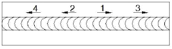
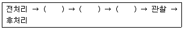

침투비파괴검사산업기사 (2014-09-20 기출문제)
1과목: 비파괴검사 개론
1. 비파괴시험 방법에 대해 기술한 것으로 올바른 것은?
- 초음파탐상시험은 구조물을 가열했을 때에 생기는 표면온도분포를 이용하는 방법이다.
- 광탄성실험법은 구조물을 가열했을 때 생기는 변위에 관계한 간섭파를 관찰하여 결함을 판정하는 방법이다.
- 음향방출시험은 재료가 파괴되는 과정에서 미세한 균열의 진전에 수반하는 응력파를 검출하고 파괴예지나 방비에 이용되는 방법이다.
- 컴퓨터 단층촬영법은 파동의 간섭성을 이용하여 본래의 상을 재생하는 홀로그래피(Holography)를 이용한 방법이다.
(정답률: 75%)

2. 누설시험을 국부적으로 부위에 적용할 때 탐상 감도가 가장 높은 검사법은?
- 진공 시험
- 기포 누설시험
- 질량분석 누설시험
- 압력변환 누설시험
(정답률: 58%)
3. 비파괴검사를 적용한 다음 내용 중 가장 부적절한 것은?
- 직경 100mm, 두께 6mm, 길이 6m인 배관 2개를 용접하여 방사선투과검사를 하고 내부는 침투탐상검사를 하였다.
- 직경 50mm, 두께 6mm인 강관의 용접부위 홈면을 침투탐상검사와 자분탐상검사를 하였다.
- 저장탱크를 만들기 위해 구입한 평판(Plate)을 초음파탐상검사를 하였다.
- 직경100mm인 축(Shaft)을 초음파탐상검사를 하였다.
(정답률: 74%)
4. 다음 결함 중 방사선투과시험으로 검출하기 가장 어려운 것은?
- 기공
- 슬래그
- 용입부족
- 라미네이션
(정답률: 73%)
5. 강용접부의 제조검사 시 이용되는 자분탐상시험의 대상이 되는 결함이 아닌 것은?
- 개선면의 라미네이션
- 이면 가우징면의 용입부족
- 언더컷, 오버랩
- 응력부식 균열
(정답률: 45%)
6. 파면에 따른 주철의 분류에 해당되지 않는 것은?
- 백주철
- 반주철
- 공석주철
- 회주철
(정답률: 75%)
7. 마그네슘합금이 구조재료로써 갖는 특징을 설명한 것 중 틀린 것은?
- 소성가공이 좋아 상온변형이 잘된다.
- 비강도가 커서 항공 우주용 재료로 사용된다.
- 기계가공성이 좋고, 아름다운 절삭면이 얻어진다.
- 감쇠능인 주철보다 커서 소음방지 구조재로서 우수하다.
(정답률: 69%)
8. 수소저장합금의 기능이 아닌 것은?
- 수소의 분리 및 정제
- 수소가스의 액화와 분해
- 열에너지 저장 및 수송
- 저온, 저압에서의 수소저장
(정답률: 70%)
9. SKH2, SKH3 등 W계 고속도 공구강의 화학 성분으로 옳은 것은?
- 18%V - 4%W - 1%Cr
- 18%W - 4%V - 1%Cr
- 18%Cr - 4%W - 1%V
- 18%W - 4%Cr - 1%V
(정답률: 74%)
10. 접종(Inoculation)에 대한 설명으로 옳은 것은?
- 과냉도가 작은 금속에 물을 부어주는 것이다.
- 자기적 성질을 부여하여 합금을 형성시키는 것이다.
- 융체에 진동을 주어 응고가 되지 못하게 하는 것이다.
- 금속의 작은 조각을 핵의 종자가 되도록 첨가하는 것이다.
(정답률: 81%)
11. 황동의 조직에 대한 설명으로 틀린 것은?
- γ-고용체는 가공성이 우수하다.
- α-고용체는 연하고 연성이 크다.
- β-고용체는 체심입방격자 조직의 결정을 갖는다.
- 실용되는 것은 α 및 α+β의 2개의 상이다.
(정답률: 49%)
12. 불변강이 아닌 것은?
- 인바
- 엘린바
- 플레티나이트
- 애드미럴티 메탈
(정답률: 65%)
13. 제진 합금에 대한 설명으로 옳은 것은?
- 제진 합금에서 제진 성능은 외부 마찰에 기인하다.
- 재료의 방진 능력을 나타내는 방법으로서는 비감쇠능이 이용된다.
- 일반적으로 강도가 큰 금속일수록 탄성도 있고, 감쇠능이 크다.
- 제진 합금을 이용하여 기계 구조물을 만들면 기계적으 정밀도는 향상되고, 피로 응력, 부식에 대한 수명은 짧아진다.
(정답률: 47%)
14. Fe-C 상태도에서 포정점의 온도는 약 몇 ℃ 인가?
- 210℃
- 768℃
- 1190℃
- 1490℃
(정답률: 58%)
15. 베어링 합금의 구비조건을 설명한 것 중 틀린 것은?
- 충분한 점성과 인성이 있어야 한다.
- 내소착성이 크고, 내식성이 좋아야 한다.
- 마찰계수가 크고, 저항력이 적어야 한다.
- 하중에 견딜 수 있는 경도와 내압력을 가져야 한다.
(정답률: 75%)
16. 표점거리 50mm, 인장시험 후 표점거리가 60mm,일 경우 연신율은?
- 16.7%
- 20%
- 25%
- 33.3%
(정답률: 73%)
17. 용접 분위기 가운데 수소 또는 일산화탄소의 과잉으로 가장 많이 발생되는 용접 결함은?
- 언더컷이 발생한다.
- 기공이 발생한다.
- 슬래그의 양이 많아진다.
- 크랙이 발생한다.
(정답률: 78%)
18. 아크 용접에서 아크 쏠림을 방지하는 방법으로 틀린 것은?
- 직류용접으로 하지 말고 교류용접으로 한다.
- 접지점은 될 수 있는 대로 용접부에서 멀리한다.
- 아크의 길이를 길게 한다.
- 받침쇠, 긴 가접부, 엔드탭을 이용한다.
(정답률: 75%)
19. 피복아크용접에 대한 설명으로 알맞은 것은?
- 입상의 플럭스를 사용한다.
- 티탄합금, 알루미늄 등의 용접에 사용한다.
- 주조 반자동 및 자동용접으로 수행한다.
- 고셀룰로오스계, 저수소계 등의 용접봉을 사용한다.
(정답률: 73%)
20. 수축과 잔류응력을 줄이기 위해 사용하는 용착법으로 보기와 같은 용착법은?

- 백스텝법
- 스킵법
- 전진법
- 대칭법
(정답률: 86%)
2과목: 침투탐상검사 원리 및 규격
21. 자외선조사장치에서 고압수은등의 파장의 320nm 이하의 광선을 차단하는 주된 이유는?
- 인체에 유해하므로
- 형광을 발산시키지 않으므로
- 제품의 성질을 변화시키므로
- 결함지시모양의 식별이 곤란하므로
(정답률: 74%)
22. 염색침투탐상법과 형광침투탐상법을 병행해서 검사할 경우 수행해야 하는 검사 순서는?
- 형광 침투탐상검사를 먼저 실시힌다.
- 염색 침투탐상검사를 먼저 실시한다.
- 어느 방법을 먼저 수행하든 상관없다.
- 두가지 방법을 병행해서 수행할 수 없다.
(정답률: 56%)
23. 용제제거성 침투탐상시험에서 잉여 침투액 제거처리에 대한 설명으로 틀린 것은?
- 다량 사용 등 과세척에 주의하여야 한다.
- 세척액은 물을 사용하지 않는다.
- 먼저 마른 천으로 닦아내고, 그 다음 용제를 천에 묻혀서 가볍게 닦아낸다.
- 50 psi 이상의 압력으로 압축된 공기를 표면에 분사하여 닦아낸다.
(정답률: 75%)
24. 어두운 곳에서 미세한 결함이나 비교적 폭이 넓고 얕은 결함의 검출에 가장 알맞은 침투탐상시험법은?
- 용제제거성 형광침투탐상
- 수세성 염색침투탐상
- 후유화성 염색침투탐상
- 후유화성 형광침투탐상
(정답률: 77%)
25. 복잡한 형상으로 된 소형제품의 제작 단계에서 침투탐상시험을 할 때 잉여 후유화성 침투액을 제거하는 방법으로 적절한 것은?
- 고온의 물에 침적하여 제거한다.
- 흐르는 물에 철솔로 문질러 제거한다.
- 적당한 수압으로 물을 뿌려 제거한다.
- 일반 용제를 사용하여 헝겊으로 제거한다.
(정답률: 81%)
26. 유체의 특성 중 서로 접촉하고 있는 두 층이 상호 붙어있으려고 하는 성질은?
- 점성
- 탄성
- 비중
- 표면장력
(정답률: 70%)
27. 자외선조사등의 강도를 측정할 수 있는 기기는?
- 울트라바이오렛메타(Ultraviolet Meter)
- 일루미노메타(illuminometer)
- 서베이메타(Survey Meter)
- 칼로리메타(Calorimeter)
(정답률: 68%)
28. 건식 현상제의 점검방법을 설명한 것 중 적절하지 못한 것은?
- 사용 중 세척성을 측정한다.
- 뭉침 현상을 관찰한다.
- 오염도를 측정한다.
- 침투액 혼입에 의한 과도한 형광이 있는지 검사한다.
(정답률: 73%)
29. 하전 입자의 흡착성을 이용한 침투탐상검사의 특성 중 잘못 설명된 것은?
- 결함이 있는 곳에 분말입자가 모여 지시를 형성한다.
- 적용하는 분말의 입자는 양전하를 가진다.
- 시험체는 약간의 전도성을 가진 것이어야 한다.
- 탄산칼슘의 미립자분말을 시험체의 표면에 적용시킨다.
(정답률: 60%)
30. 시험체에 침투액을 적용한 후 배액시간이 너무 길어지면 나타나는 현상으로 틀린 것은?
- 침투액이 건조하게 된다.
- 침투효과가 저하된다.
- 세척처리가 곤란하다.
- 현상이 쉬워진다.
(정답률: 73%)
31. 침투탐상 시험방법 및 침투지시모양의 분류(KS B 0816)에 따라 다음 중 독립하여 존재하는 결함에 분류되지 않은 것은?
- 갈라짐
- 선상결함
- 방사상 결함
- 원형상 결함
(정답률: 84%)
32. 보일러 및 압력용기에 대한 침투탐상검사(ASME Sec.V Art.6)에서 니켈합금을 침투탐상검사할 때 탐상제를 분석한 유황 함유량은 무게비 몇 %를 초과하지 말아야 하는가?
- 3%
- 2%
- 1%
- 0.5%
(정답률: 67%)
33. 침투탐상 시험방법 및 침투지시모양의 분류(KS B 0816)에서 B 형 대비 시험편의 종류가 아닌 것은?
- PT-B50
- PT-B40
- PT-B30
- PT-B20
(정답률: 76%)
34. ASME Sec.VIII D.1에 의한 침투탐상시험에서 결함평가 시 원형상 결함의 허용기준에 관한 내용 중 옳은 것은?
- 어떠한 원형상 결함도 불합격이다.
- 5 개 이상의 원형상 결함은 결함크기나 결함간 거리에 관계없이 불합격이다.
- 타원형 결함 원형상 결함에 포함시키지 않는다.
- 원형상 결함길이가 3/16인치(5㎜)이상은 불합격이다.
(정답률: 73%)
35. 항공우주용 기기의 침투탐상 검사방법(KS W 0914)에서 현상제를 사용하지 않는 경우 형광 침투액으로 탐상할 때 허용되는 침투액의 최대 체류시간은?
- 30분
- 60분
- 120분
- 240분
(정답률: 50%)
36. 침투탐상 시험방법 및 침투지시모양의 분류(KS B 0816)에 규정한 “용제제거성 염색침투액-속건식현상법”의 시험절차를 바르게 나타낸 것은?
- 전처리 - 침투처리 - 건조처리 - 현상처리 - 관찰 - 후처리
- 전처리 - 침투처리 - 현상처리 - 관찰 - 후처리 - 수세처리
- 전처리 - 침투처리 - 제거처리 - 현상처리 - 관찰 - 후처리
- 전처리 - 침투처리 - 건조처리 - 후처리 - 관찰 - 현상처리
(정답률: 76%)
37. 보일러 및 압력용기에 대한 침투탐상검사(ASME Sec.V Art.6)에 따라 염색침투액을 적용하여 검사할 경우 적용해야 할 현상제는?
- 습식현상제를 사용해야 한다.
- 건식현상제를 사용해야만 한다.
- 여과입자 분말현상제만 사용해야 한다.
- 모든 현상제를 기용한다,.
(정답률: 67%)
38. 보일러 및 압력용기에 대한 표준침투탐상검사(ASME Sec.V Art.24 SE-165)에서 규정한 침투탐상시험에서 자외선조사 등에 대한 설명이 잘못된 것은?
- 자외선강도는 조도계는 측정한다.
- 자외선강도는 시험체 표면에서 1000㎛/cm2이상 되어야 한다.
- 자외선강도는 매주 측정해야 한다.
- 사용 전 최소한 10분 이상 예열시켜 주어야 한다.
(정답률: 47%)
39. 침투탐상 시험방법 및 침투지시모양의 분류(KS B 0816)에 따른 침투시간을 좌우하는 인자가 아닌 것은?
- 침투액의 종류와 온도
- 시험체의 재질과 온도
- 시험체의 치수와 모양
- 예측되는 결함의 종류와 크기
(정답률: 72%)
40. 주강품-침투탐상검사(KS D ISO 4987)에서 주강에 대한 특정 요구사항으로 잘못된 것은?
- 적용 제품의 할로겐과 유황 성분이 1% 미만이어야 한다.
- 적용 온도는 10 ~ 50℃ 사이이어야 한다.
- 건조는 250㎪ 이하의 압력과 50℃ 이하의 깨끗한 공기여야 한다.
- 현상시간은 일반적으로 15 ~ 30 분 사이로 한다.
(정답률: 46%)
3과목: 침투탐상검사 시험
41. 휘발성이 높은 유기용제에 백색 미세분말의 현상제를 사용하는 방법은?
- 건식 현상법
- 속건식 현상법
- 습식 현상법
- 무 현상법
(정답률: 70%)
42. 침투탐상제 중 기름베이스유화제의 피로시험으로 속하는 것이 아닌 것은?
- 점성
- 휘도
- 수세성
- 부식성
(정답률: 63%)
43. 용접부의 침투탐상검사 시 전처리할 때 일반적으로 이용되는 방법이 아닌 것은?
- 솔질
- 산세척
- 연삭
- 용제세척
(정답률: 75%)
44. 형광 침투탐상시험 시 열처리 균열은 대부분 어떤 형태의 지시를 나타내는가?
- 미세한 청백색 지시모양
- 단속된 붉은 선형지시모양
- 밝은 황록색 선형지시모양
- 밝은 점들로 된 지시모양
(정답률: 69%)
45. 침투탐상검사에서 침투탐상 시스템 모니터 패널의 균열이 존재하는 면으로부터 확인할 수 있는 것은?
- 세척 특성
- 불순물 함유량 정도
- 결함 검출 감도
- 유화 능력
(정답률: 80%)
46. 시험체를 침투액 탱크에 넣어서 검사할 때 옳은 것은?
- 시험체가 침투시간 동안 탱크 내에 들어 있어야 한다
- 시험체가 최소 침투시간의 반 동안은 탱크 내에 있어야 한다.
- 시험체가 5분이상 침투액 탱크 내에 있으면 안된다.
- 시험체의 표면에 침투액이 확실히 묻어있을 정도로 있으면 된다.
(정답률: 60%)
47. 유성인 리포필릭유화제를 사용한 후유화성 액체침투탐상시험법에서 유화처리의 시기는?
- 침투처리 전
- 수세처리 전
- 침투처리 후
- 현상처리 후
(정답률: 73%)
48. 다음 중 침투탐상검사에 사용되는 자외선조사등의 강도에 대한 설명으로 옳은 것은?
- 적용하는 자외선의 강도가 낮을수록 더 작은 결함 지시를 검출할 수 있다.
- 적용하는 자외선의 강도가 높을수록 더 작은 결함 지시를 검출할 수 있다.
- 주변 백색광의 준위가 낮아질수록 검사체의 콘트라스트는 나빠진다.
- 주변 백색광의 준위가 높아질수록 더 작은 결함지시를 검출할 수 있다.
(정답률: 83%)
49. 모래주형 주조품의 침투탐상검사 시 검출할 수 있는 가장 대표적인 표면 불연속의 형태는?
- 심
- 기공
- 터짐
- 백점
(정답률: 68%)
50. 니켈합금강의 경우 침투탐상제 중에 함유된 어떤 물질이 사용 중에 응력부식 균열을 일으킬 수 있는데, 이 물질은 무엇인가?
- 질소(N)
- 황(S)
- 탄소(C)
- 크롬(Cr)
(정답률: 83%)
51. 침투탐상검사시 부품에 대한 전처리법으로 증기세척법을 사용하는 주된 이유로 옳은 것은?
- 표면의 모든 오염물질을 완전히 제거시킬 수 있기 때문이다.
- 용제 증기는 대부분의 석유화학 오염물질을 제거시킬 수 있기 때문이다.
- 용제 증기는 대부분의 고형의 오염물을 제거시킬 수 있기 때문이다.
- 부품의 크기에 관계없이 채택할 수 있기 때문이다.
(정답률: 80%)
52. 침투탐상검사 중에서 표면이 거친 부품을 시험하는데 가장 효과적인 검사법은?
- 수세성 형광침투탐상검사
- 후유화성 형광침투탐상검사
- 후유화성 염색침투탐상검사
- 용제제거성 염색침투탐상검사
(정답률: 79%)
53. 용제제거성 염색침투탐상검사의 특성을 설명한 것 중 틀린것은?
- 대형부품의 부분탐상에 적합하다.
- 조작 공정이 타 공정에 비해 적다.
- 개방형 침투액조를 사용한다.
- 전원 및 수도 설비가 필요하지 않다.
(정답률: 64%)
54. 탐상 표면에 적용된 침투액의 작용을 맞게 설명한 것은?
- 점성에 의해 불연속에 흡수되는 작용이다.
- 모세관 형상에 의해 불연속부로 침투하는 작용이다.
- 중력에 의하여 불연속부로 침투하는 작용이다.
- 중력에 의하여 불연속부로 흡수되는 작용이다.
(정답률: 82%)
55. 침투제의 성능을 유지하기 위해서는 주기적인 관리가 필요하다. 다음 중 가장 자주 점검해야 할 사항은?
- 오염
- 감도
- 세척성
- 형광의 밝기
(정답률: 68%)
56. 모래 주조법(Sand casting)으로 만든 알루미늄 제품의 수축균열을 침투탐상시험할 때 일반적인 검사방법은?
- 수세성 침투제, 속건식 현상제
- 용제제거성 침투제, 건식현상제
- 후유화성 침투제, 속건식 현상제
- 후유화성 침투제, 습식 현상제
(정답률: 41%)
57. 건식현상제를 사용하는 용제제거성 형광침투탐상검사의 탐상순서가 다음과 같을 때 괄호 안의 순서는?

- 침투처리 → 제거처리 → 건조처리
- 침투처리 → 유화처리 → 제거처리
- 침투처리 → 제거처리 → 현상처리
- 침투처리 → 현상처리 → 건조처리
(정답률: 82%)
58. 침투제의 침투시간이 적절히 선정되도록 하기 위해서 가장 먼저 고려해야 할 사항은?
- 시편의 형상
- 예상되는 불연속의 종류
- 시편의 크기
- 표면 거칠기
(정답률: 75%)
59. 침투탐상 시 의사지시(False indication)의 발생원인을 설명한 것으로 가장 거리가 먼 것은?
- 제거(세척)처리가 적절하게 실시되지 않은 경우
- 내부 결함이 너무 많이 내포된 경우
- 검사개시 때의 표면상태가 침투탐상검사에 적합하지 않은 경우
- 검사체의 형상이 복잡하여 선정된 검사법이 그와 같은 형상의 것을 검사하기에 적합하지 않은 경우
(정답률: 81%)
60. 침투탐상시험 시 사용되는 A형 시험편의 주 목적을 설명한 것은?
- 현상제의 점도 측정에 사용된다.
- 침투제의 수분함량 시험에 사용된다.
- 침투제의 오염여부를 확인하는데 사용된다.
- 탐상 방법의 적부를 확인하는데 사용된다.
(정답률: 73%)